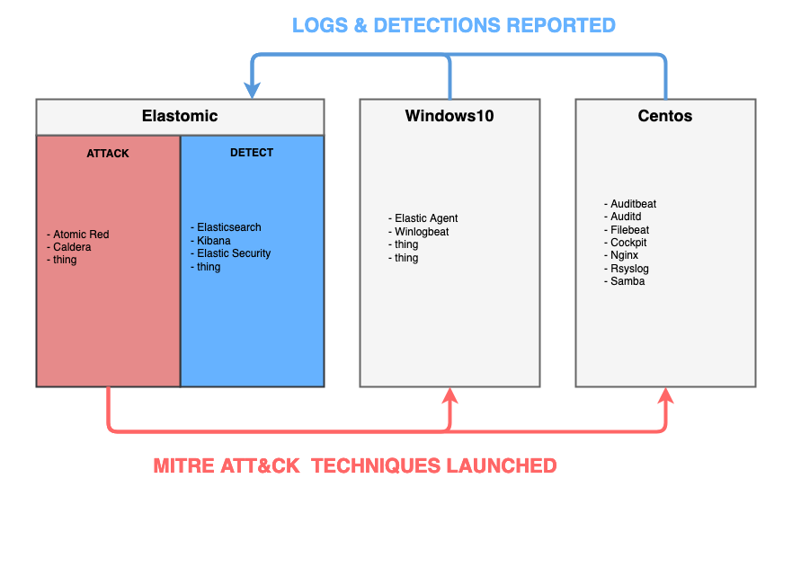

The bottom line: Cyber Threat Detection for your laptop
What is Thremulation Station?
Thremulation Station is an approachable and small-scale threat emulation and detection range. It primarily uses Elastic Security and Atomic Redteam to emulate and detect adversary activity.
The project is a collection of existing tools like VirtualBox and Vagrant an to deploy a local testing environment that requires only a reasonably spec’d machine.
How is it different?
Not everyone has a blade server heating their home from a closet…and not everyone, be it a junior hunter/red teamer who is just getting started or an operator with 20 years experience, is an engineer that can stitch all of the complex services together to grow or sharpen your skills.
Who was it built for?
This project has many practical use cases, and we’re excited to see how it’s used. Here are a few examples that we had in mind while creating the project.
- Cyber defense education
- Generating training data
- Threat intelligence training
- Writing and validating detection rules
- Writing and testing threat tactics and techniques